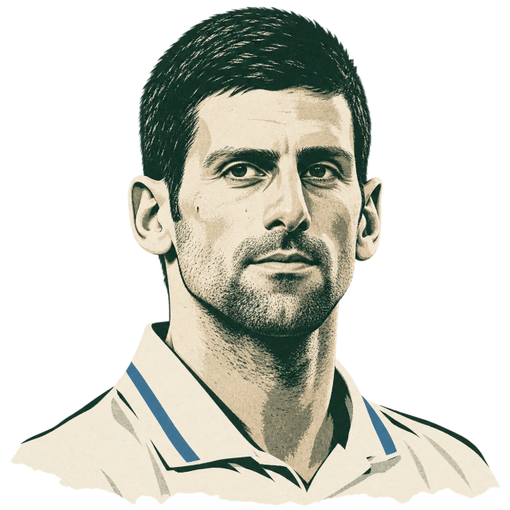

Two ways
forward.
Come in behind the serve. Or play a drop shot.
Two ways forward. Did both work?
US Open final, 2023
Djokovic / Medvedev
Come in behind the serve. Or play a drop shot.
Two ways forward. Did both work?
The whole second set.
One court.
Three groups of points.
Follow each fraction to every point behind it. Open a row to see what happened.
Scores are before the point, in Djokovic / Medvedev order.
Then see set point →These outcomes describe the points he played. Different balls, scores and choices: this is no test of what another tactic would have produced.

Djokovic serves at 5–6 in the second set. A fourteen-point game, including a set point to save.
In this game: four serve-and-volley points, four wins. Two points with his drop shot, both lost. He eventually holds for 6–6.
Set point Medvedev · before this point
The complete game, including two double faults. Select a point to inspect its result.
The recorded shots
Recorded order, not timing. Scroll or use arrow keys to inspect.
Direction bands, not bounce locations. Shading marks a service box or return-depth category. Schematic ends; no player positions or flight paths.
Source fragment · preceded by a let
Direction describes where a shot crossed, or would have crossed, the opponent’s baseline. A missed shot does not become an in-court landing mark. Depth is plotted only for a completed return with a documented depth code; extra digits on later strokes stay in the source fragment without becoming court coordinates.
The serve-and-volley symbol records an approach, not the player’s route. A let precedes point 154’s counted serve and is kept outside its shot sequence. Charting instructions · Notation guide.
Eleven serve-and-volley points. Eleven wins. On his serve, only one of five points containing his own drop shot went his way.
The same player. The same set. Different balls and different situations. Five drop-shot points cannot tell us what another choice would have produced.
Even the one drop-shot point he won was a counter-drop, after Medvedev played one first.
Check the comparisonThe opening comparison includes all 110 second-set points: 11 serve-and-volley points, 11 points containing Djokovic’s drop shot, and 88 other points. “Keep service points” removes the 58 points played on Medvedev’s serve. That leaves 11, five and 36 points: all 52 of Djokovic’s second-set service points.
A drop-shot point contains a charted Djokovic drop shot; the rally may continue afterward. The serve-and-volley group uses explicit charting codes. The equal court pieces name categories. Their areas and the aggregate ball positions do not encode quantities or shot locations. The three pressure-point court views separately show recorded shot categories and their exact source fragments; they are not tracking replays. The off-court portraits are generated editorial illustrations. Their fixed neutral expressions represent identity; the racket emblem identifies the recorded hitter, not a stroke pose or player position.
Inspect the points behind each fraction · Download all 110 original-format records.
Frozen second-set SHA-256eb6f8cf0b7c3766f92f70424d9ec870a79a325e06360b4cba67b5444e62b1b5e
Across the whole match, the MCP chart gives 19/21 serve-and-volley points won; official reporting gives 20/22. The reason for the one-event difference is unresolved. This demo stays with set two: its explicitly charted 11/11 agrees with the ATP report.
Data: Jeff Sackmann / Tennis Abstract Match Charting Project. Charted by Zindaras. Original match report · ATP account · CC BY-NC-SA 4.0.